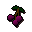

Goblin
| Config name | goblin_redarmour |
| NPC id | 299 |
| Combat level | 5 |
| Hitpoints | 12 |
| Attack / Strength / Defence | 3 / None / 4 |
| Respawn | 70 ticks |
| Options | Talk-to, Attack |
| Wander range | 15 tiles from spawn |
| Max range | 17 tiles from spawn |
| Area folder | area_falador |
| Defined in | scripts/areas/area_falador/configs/goblin_village/goblin_village.npc |
| Bonuses | Attack bonus 12, Strength bonus 12 |
Goblin
An ugly green creature.
Show all 11 spawns on the world map → Open in knowledge graph →
Drops
Drop script: scripts/drop tables/scripts/goblin.rs2 (specific handler)
Drop table
| Item | Quantity | Rarity | Notes |
|---|---|---|---|
| 1 | 17/64 (26.56%) | ||
| 3 | 13/128 (10.16%) | ||
| 10 | 11/128 (8.59%) | free-to-play only | |
| 1 | 5/64 (7.81%) | ||
| 1 | 9/128 (7.03%) | members | |
| 5 | 1/16 (6.25%) | ||
| 16 | 7/128 (5.47%) | ||
| 1 | 3/128 (2.34%) | ||
| 7 | 3/128 (2.34%) | ||
| 2 | 3/128 (2.34%) | ||
| 4 | 3/128 (2.34%) | ||
| 2 | 3/128 (2.34%) | ||
| 24 | 3/128 (2.34%) | ||
| 5 | 1/64 (1.56%) | members | |
| Herb drop table table | see table | 1/64 (1.56%) | |
| 1 | 1/128 (0.78%) | ||
| 1 | 1/128 (0.78%) | ||
| 1 | 1/128 (0.78%) | ||
 Grapes | 1 | 1/128 (0.78%) | |
| 1 | 1/128 (0.78%) | ||
| 1 | 1/128 (0.78%) |
Tertiary drops
| Item | Quantity | Rarity | Notes |
|---|---|---|---|
| Clue scroll (easy) | 1 | 1/128 (0.78%) | members |
Locations
| Area | Coordinates | Level | Count | Map |
|---|---|---|---|---|
| Goblin Village | 2951, 3482 | 0 | 1 | view |
| Goblin Village | 2951, 3483 | 0 | 1 | view |
| Goblin Village | 2951, 3501 | 0 | 1 | view |
| Goblin Village | 2952, 3507 | 0 | 1 | view |
| Goblin Village | 2953, 3487 | 0 | 1 | view |
| Goblin Village | 2954, 3500 | 0 | 1 | view |
| Goblin Village | 2955, 3507 | 0 | 1 | view |
| Goblin Village | 2957, 3492 | 0 | 1 | view |
| Goblin Village | 2959, 3499 | 0 | 1 | view |
| Goblin Village | 2962, 3503 | 0 | 1 | view |
| Goblin Village | 2964, 3511 | 0 | 1 | view |
Dialogue
GoblinRed armour best!
PlayerErr ok.
PlayerWhy is red best?
GoblinCos General Bentnoze says so, and he bigger than me.
Referenced in scripts
scripts/areas/area_falador/scripts/goblin_village/goblin_armed_red.rs2scripts/drop tables/scripts/goblin.rs2